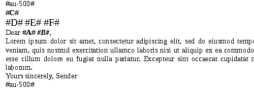

1. Prepare the table data in an Excel spreadsheet. You can place data in different sheets. You can name the columns for convenience, but you don't have to.
2. Prepare a template Word document. Place sheet name surrounded by a # character at the begining and end of the pieces you want to fill with data from Excel. That is enough if you are using columns letters and want to process all rows of the sheet, go to the step 5.
3. If you have specified columns names, put the row number containing the names after colon in the start label of the fragment. If you are using columns letters instead of the names put 0 as the row number of names.
picture4. To select rows range for processing, place the start and end row numbers in the start label after the names row number, using colon as separator. Omit end row number for processing rows to the end.
picture5. Place columns letters or names surrounded by # character in their places in the marked section. A template can have as many fragments as you need.
picture6. That is it. Upload two files to the workspace on this page, press the button in the workspace or here, enjoy the resuslt.docx file.
picture